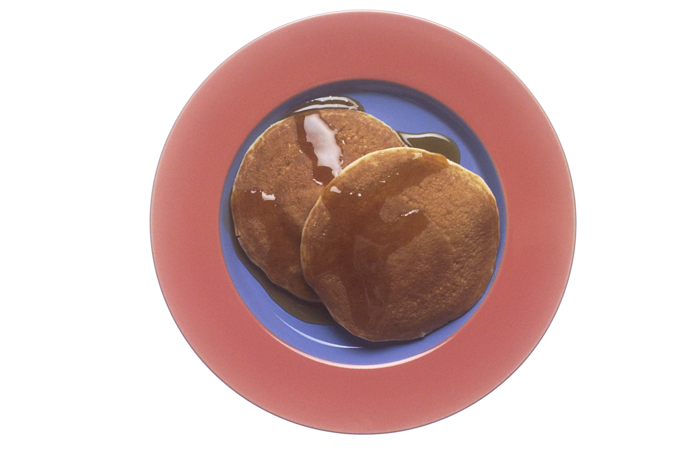
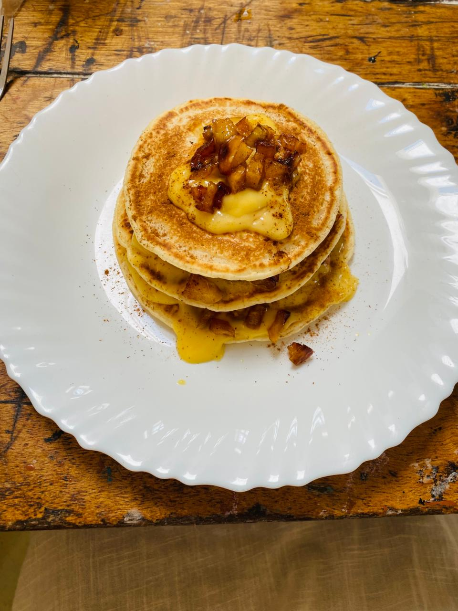

Mix with a light hand
Stir the wet and dry ingredients just until combined. A few small lumps are fine; overmixing can make pancakes tougher.
A little know-how for a better stack—and a few delicious ways to make it your own.
Find your flip
Stir the wet and dry ingredients just until combined. A few small lumps are fine; overmixing can make pancakes tougher.
Use a lightly greased pan over steady medium heat. If the outside colors before the middle cooks, lower the heat a little.
Turn the pancake when bubbles appear across the surface and the edges begin to look set. Cook the second side until golden.

Pancakes are a broad family of quick-cooking batters and griddle cakes. Some are thin and flexible, like English pancakes and crêpes; others rise into a thicker, airy stack. Ingredients and toppings shift with local kitchens and tastes.